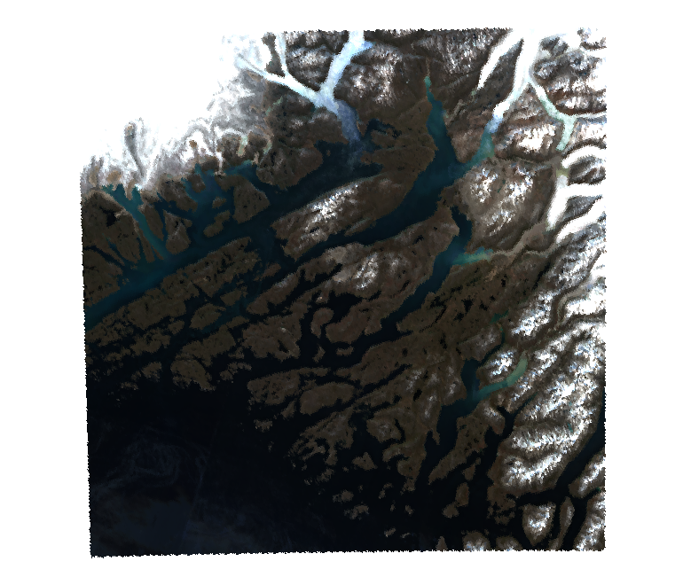
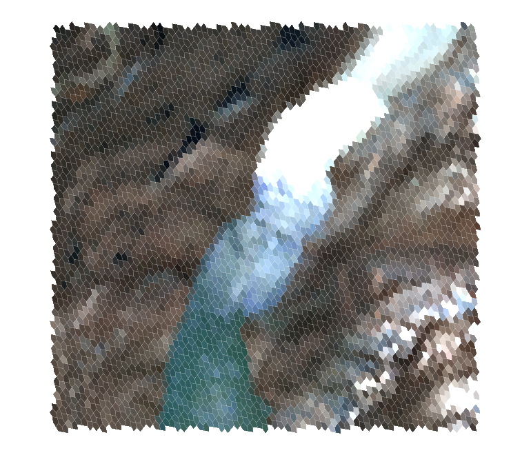

a5px aggregates raster pixels into A5 cells. A5 is a discrete global grid system (DGGS): it divides the globe into equal-area pentagonal cells at 31 resolutions. a5px streams GeoTIFF and Cloud-Optimised GeoTIFF (COG) files from local disk or cloud object stores and computes per-cell statistics in a single pass, in Rust.
Results are a tibble, an Arrow table or a Parquet file keyed by a5R::a5_cell. On a 12-band Sentinel-2 COG, a5px is about 7 times faster end to end than gdal raster zonal-stats and 11 times faster than a terra and dplyr pipeline.
Installation
a5px is not on CRAN. Install the development version from GitHub:
# install.packages("pak")
pak::pak("belian-earth/a5px")Building from source needs a Rust toolchain with rustc 1.85 or later. pak also installs a5R, which provides the cell type. The examples below plot with a5view:
pak::pak("belian-earth/a5view")Example
Earth Genome publishes annual cloud-free Sentinel-2 mosaics as one COG per band. This reads the red, green and blue bands of a 2023 tile over the fjords of south Greenland into resolution-14 cells, about 360 m across. separate = TRUE makes each file a column, named after the file, and the three files share one fetch queue. With the default stat = "mean", a5px reads the coarsest COG overview that still has several pixels per cell, rather than every 10 m pixel.
library(a5px)
tile <- paste0(
"https://data.source.coop/earthgenome/sentinel2-temporal-mosaics/",
"23VMH_2023-01-01_2024-01-01/"
)
rgb <- paste0(tile, c("B04", "B03", "B02"), ".tif") # red, green, blue
fjords <- a5_read_raster(rgb, resolution = 14L, separate = TRUE)
fjords
#> # A tibble: 95,875 × 4
#> cell B04 B03 B02
#> <a5_cell> <dbl> <dbl> <dbl>
#> 1 0da201e280000000 8468. 8411. 8809.
#> 2 0da201de80000000 7548. 7455. 7794.
#> 3 0da2be2780000000 7176. 7007. 7260.
#> 4 0da201e080000000 8523. 8439. 8826.
#> 5 0da2be2980000000 6389. 6308. 6632.
#> 6 0da2be2580000000 8230. 7798. 8373.
#> 7 0da2f30c80000000 846. 818. 753.
#> 8 0da2f30a80000000 764. 723. 637.
#> 9 0da2f03a80000000 1188. 1190. 1176.
#> 10 0da1ff1080000000 8863. 8560. 8758.
#> # ℹ 95,865 more rowsa5view’s geom_a5() draws the cells as a ggplot2 layer, and cells_rgb() turns the three bands into a true-colour composite. The range sets the reflectance values (scaled by 10,000) that map to black and full brightness.
library(ggplot2)
library(a5view)
ggplot(fjords, aes(cell = cell, fill = cells_rgb(B04, B03, B02, range = c(0, 4500)))) +
geom_a5() +
theme_void()
bbox reads a subset. Here a glacier meets the fjord at resolution 15, about 180 m across, with outlines to show the pentagonal cells:
glacier <- a5_read_raster(
rgb, resolution = 15L, bbox = c(-45.36, 61.11, -45.14, 61.21), separate = TRUE
)
ggplot(glacier, aes(cell = cell, fill = cells_rgb(B04, B03, B02, range = c(0, 4500)))) +
geom_a5(colour = "white", linewidth = 0.05) +
theme_void()
Usage
Readers
Three readers share one engine and differ only in what they return:
# tibble: one numeric column per band
tbl <- a5_read_raster(src, resolution, stat, bands)
# Arrow table: a cell column and a FixedSizeList<float, n_bands> per stat
arr <- a5_read_raster_arrow(src, resolution, stat, bands, value_type = "float64")
# Parquet written directly from Rust, with no R-side Arrow round trip
a5_raster_to_parquet(src, dest, resolution, stat, bands, value_type, compression)
# write a tibble or Arrow table from the first two
a5px_write_parquet(x, dest, compression = "zstd")
# metadata without reading pixels
a5_raster_info(src) # dimensions, data type, block grid, overviews, CRS, envelope
a5px_store_config(src) # resolved object store configuration for a remote srcTheir main arguments:
-
src: one or more paths or URLs: local,file://,http(s)://,s3://,gs://oraz://. Remote reads fetch byte ranges and never download the whole file. -
separate,composite: how several files combine (see Several files). -
resolution: A5 resolution, 0 to 29 (30 is not yet supported).a5R::a5_cell_area()gives the cell area at each. -
stat: one or more of"mean","sum","count","min","max","var","sd","majority"and"fractions". With several, the tibble has one column per band and stat, and the Arrow and Parquet outputs one list column per stat. -
bands:NULL(all), 1-based indices, or names matched against the GDALDESCRIPTIONband tag. -
bbox,bbox_align: a WGS 84 subset, by pixel or by whole COG block (see Chunked reads). -
aoi,containment: keep only the A5 cells of a polygon (see Areas of interest). -
mode:"forward","overlay"or"centroid"sampling. -
scoff,dequant: decode stored values per pixel before aggregation (see Decoding stored values). -
use_overviews: whetherstat = "mean"may read a COG overview. -
cpu_workers,io_concurrency: tile-level concurrency. -
store_opts: object store options (see Remote sources).
Several files
Several files are read in one pass and share the fetch queue and workers. How they combine depends on what they hold:
# bands stored one per file: one column per file, named by names(src)
# or the file name
a5_read_raster(c(red = red_url, nir = nir_url), 14L, separate = TRUE)
# adjacent tiles, or repeat captures, of one product: pixels pooled
a5_read_raster(c(tile_a, tile_b), 14L)
# a statistic per capture, reduced across captures for each cell
a5_read_raster(dates, 14L, composite = "median")
a5_read_raster(dates, 14L, composite = "count") # captures per cellPooled files must have the same bands and pixel size. Every valid pixel enters its cell once, so cells on a seam between tiles combine exactly. Where files overlap, every capture counts, unlike GDAL’s last-wins rule: sum and count include the overlap once per file. composite instead computes stat for each file, then reduces across files per cell, weighting each file by its valid pixel count there; the cell grid is shared, so the files need not be aligned. Single-band files without band descriptions look identical to the pooling check, so set separate = TRUE for files that hold different bands.
Several statistics in one pass
# sum and count let you merge partial results without re-reading
agg <- a5_read_raster(src, resolution = 14L, stat = c("mean", "sum", "count"))
# columns: cell, B02_mean, B02_sum, B02_count, B03_mean, ...Coarser resolutions
a5_aggregate() summarises a result at a coarser resolution without re-reading the raster. Each cell goes to the coarse cell that contains its centre:
coarse <- a5_aggregate(fine, to_resolution = 10L)Decoding stored values
scoff = TRUE applies the scale and offset each band declares (see a5_raster_info()), for example to turn integer reflectance into physical units. The decode is linear, so it can run before or after averaging with the same result.
Quantized sources are different. A nonlinear decode does not commute with the mean, so averaging raw codes and decoding the result gives the wrong answer. dequant decodes each pixel in Rust before aggregation:
# Alpha Earth Foundations int8 codes: sign(x) * (x / 127.5)^2
emb <- a5_read_raster(url, resolution = 14L, bands = 1:8, dequant = dequant_aef)
# or any vectorised R function over the integer codes
emb <- a5_read_raster(url, resolution = 14L, dequant = function(x) x / 250)Any R function works because the codes are a finite set: a5px evaluates the function once per possible code and passes Rust a lookup table. So dequant needs an integer source of 16 bits or fewer (int8, uint8, int16 or uint16). NoData is matched against the raw code.
Setting dequant also turns use_overviews off by default. COG overviews are usually built by averaging, and an average of codes decodes wrongly. Set use_overviews = TRUE (it warns) only when the overviews were built with nearest or mode resampling.
Overlay sampling
The default forward mode assigns each pixel to the cell containing its centre. mode = "overlay" instead splits each pixel between the cells it overlaps, in proportion to area, estimated by supersampling each pixel (subsamples, chosen automatically by default):
# area-weighted mean: boundary pixels are shared, not all-or-nothing
a5_read_raster(src, resolution = 12L, mode = "overlay")
# mass-preserving sum: totals such as population counts are conserved
a5_read_raster(src, resolution = 12L, mode = "overlay", stat = "sum")Pixels wholly inside one cell cost the same as in forward mode; only pixels on a cell boundary are supersampled.
Categorical rasters
For integer class labels such as land cover, stat = "majority" gives each cell’s dominant class and stat = "fractions" the share of each class as a list column. Under mode = "overlay" both are area-weighted:
a5_read_raster(landcover, resolution = 12L, stat = "majority", mode = "overlay")
a5_read_raster(landcover, resolution = 12L, stat = "fractions")Cells finer than pixels
When cells are smaller than pixels, mode = "centroid" samples one value at each cell centre. interp picks the kernel: "nearest" (default), "bilinear", "bicubic" (Keys) or "lanczos".
a5_read_raster(dem, resolution = 18L, mode = "centroid", interp = "bilinear")Band selection
For COGs that store each band separately (INTERLEAVE=BAND), common for embedding rasters such as Alpha Earth Foundations, bands limits the download to the selected bands. Reading 8 of 64 bands from a 2.8 GB AEF tile takes 24 s instead of 62 s.
a5_raster_to_parquet(
url, "embeddings.parquet",
resolution = 14L,
bands = 1:8,
value_type = "float32",
compression = "zstd",
cpu_workers = 16L,
io_concurrency = 16L
)Remote sources
Cloud clients take their configuration from the environment first (every AWS_*, GOOGLE_* and AZURE_* variable that object_store understands, plus GDAL’s AWS_NO_SIGN_REQUEST=YES for public buckets) and from store_opts second, so an explicit option always wins.
# public bucket outside us-east-1, no credentials
Sys.setenv(AWS_NO_SIGN_REQUEST = "YES", AWS_REGION = "us-west-2")
a5_read_raster("s3://us-west-2.opendata.source.coop/tge-labs/aef/.../tile.tiff", 14L)
# the same without touching the environment
a5_read_raster(src, 14L, store_opts = c(aws_region = "us-west-2",
aws_skip_signature = "true"))
# check region, endpoint and signing before a long read
a5px_store_config(src, store_opts = c(aws_region = "us-west-2"))a5px does not read the shared credentials file or AWS_PROFILE. Without credentials or aws_skip_signature, the client falls back to instance metadata, which off AWS waits for a long timeout before failing.
Areas of interest
aoi restricts a read to the A5 cells of a polygon, selected as by a5R::a5_polygon_to_cells(): containment = "centre" keeps cells whose centre is inside and "overlapping" every cell the polygon touches. Selection is by cell: an included cell gets the statistics of all its valid pixels, including any outside the polygon.
a5_read_raster(src, 14L, aoi = sf::st_geometry(catchment), containment = "overlapping")
# centroid mode samples the AOI cells directly, covering the polygon without gaps
a5_read_raster(dem, 18L, mode = "centroid", aoi = catchment, containment = "overlapping")Chunked reads
The accumulators hold every touched cell in memory, so split very large reads by bbox. bbox_align = "block" takes the COG blocks whose origin lies in the bbox, so a partition of bboxes fetches every block exactly once and per-cell sum and count partials add up exactly.
info <- a5_raster_info(src) # block grid and WGS 84 envelope
chunks <- split_bbox(info$bbox, 4, 4) # your own grid over info$bbox
parts <- lapply(chunks, function(b) {
a5_read_raster(src, 18L, bbox = b, bbox_align = "block",
stat = c("sum", "count"), use_overviews = FALSE)
})Configuration
a5px_set_concurrency(cpu_workers = 8, io_concurrency = 16) # session default
a5px_get_concurrency() # current setting
Sys.setenv(A5PX_PROFILE = "1") # stage timings to stderrSupported
- Formats: tiled GeoTIFF and COG with ZSTD, Deflate, LZW, JPEG or no compression, from local files or S3, GCS, Azure and HTTP(S) stores.
-
Coordinate reference systems: EPSG codes, WKT in citation fields, and reconstruction from GeoKey parameters. Custom projections written by GDAL without an EPSG code, such as a centred Lambert azimuthal equal-area (
+proj=laea +lon_0=... +lat_0=...), Albers, Lambert conformal conic or polar stereographic, are recognised. -
NoData: the dataset-wide
TIFFTAG_GDAL_NODATA, compared safely for NaN.
Not yet supported
- Strip-based GeoTIFFs. They fail with a clear error.
- Per-band NoData. GeoTIFF does not store it; it will come with VRT support.
- Rasters that cross the antimeridian.
Stack
-
async-tiffandobject_storefor streamed reads. -
proj4rsfor pure-Rust reprojection, andproj4wktfor CRSs given only as WKT. -
a5for cell maths. -
arrow-arrayandparquetfor the Parquet writer. -
extendr-apifor the R bindings.
Acknowledgements
Built on the a5 Rust crate by Felix Palmer and on a5R for the cell type and Arrow interop. Streaming I/O and TIFF parsing come from the async-tiff team at Development Seed.